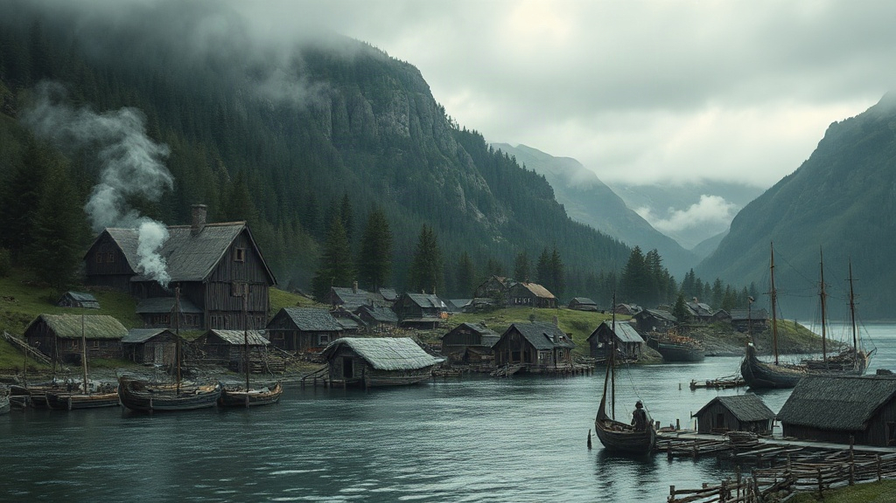
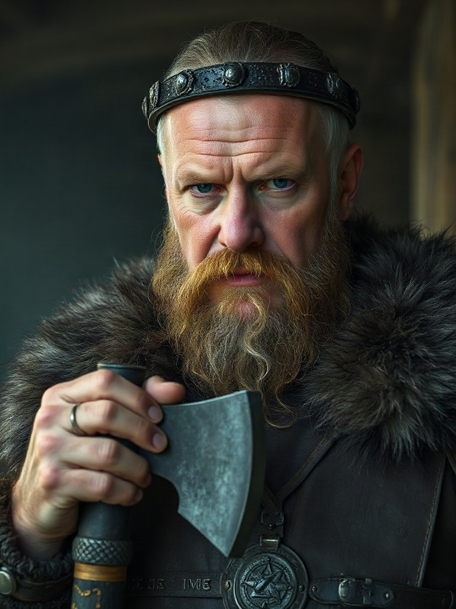
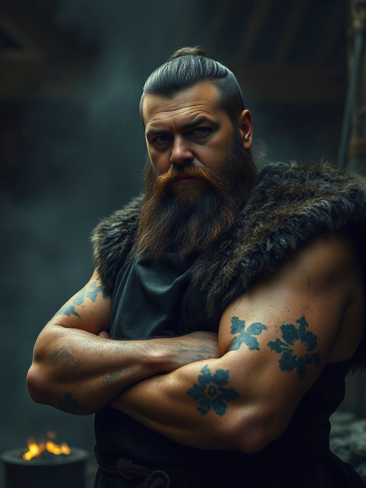
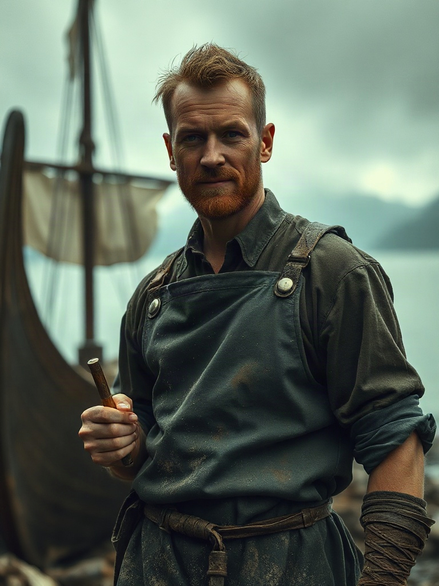
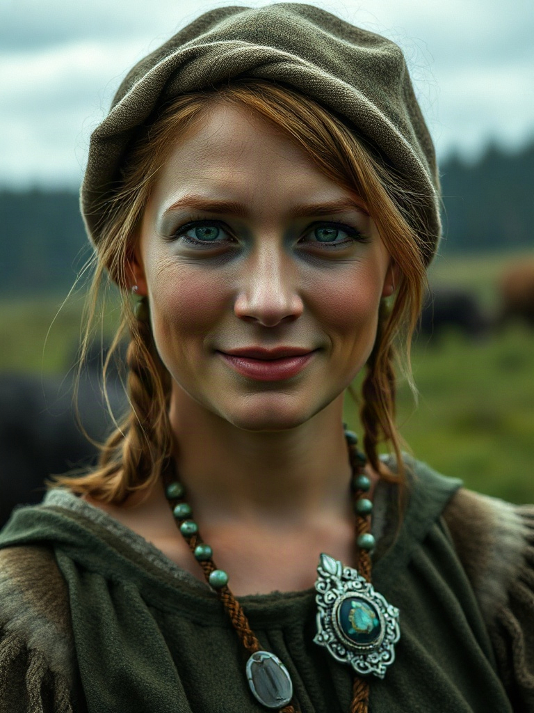
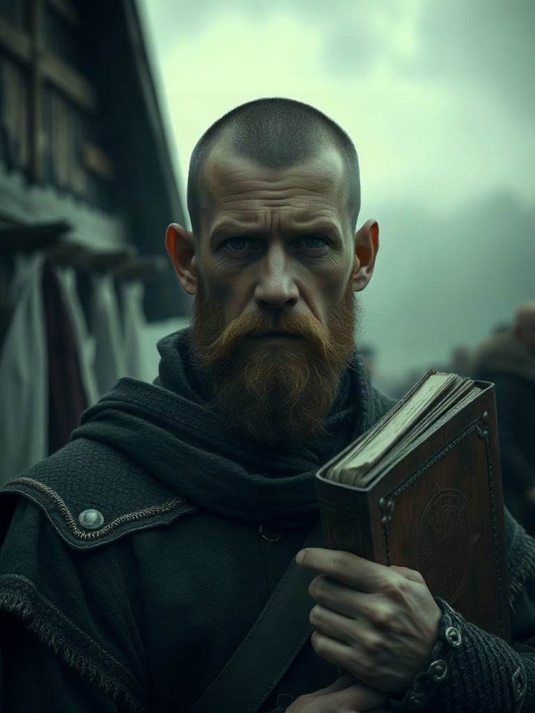
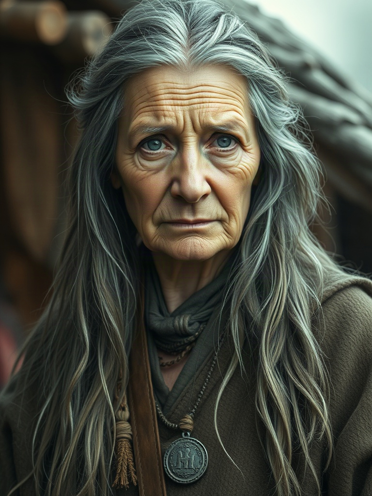
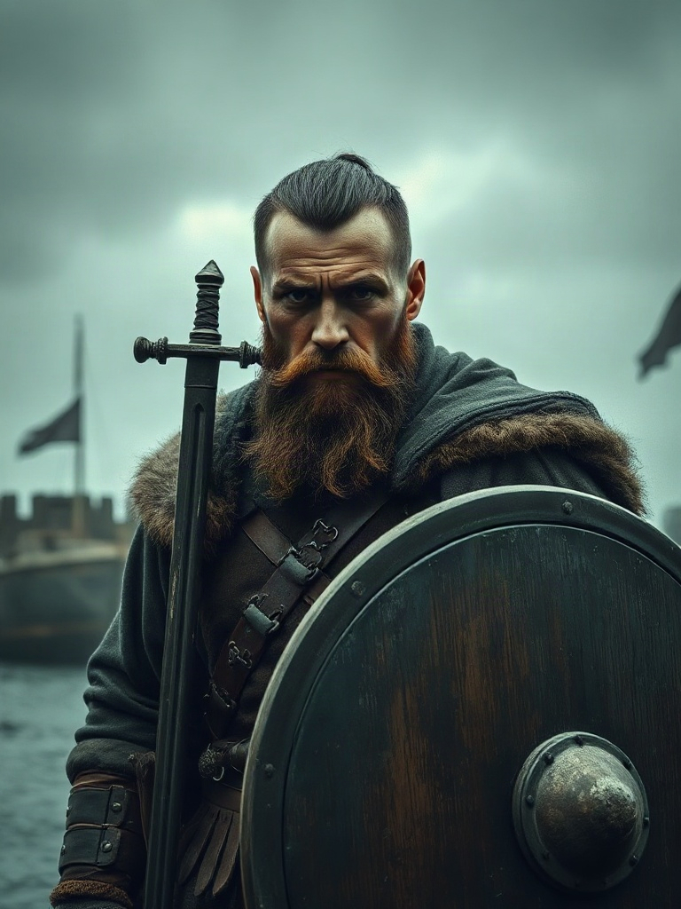
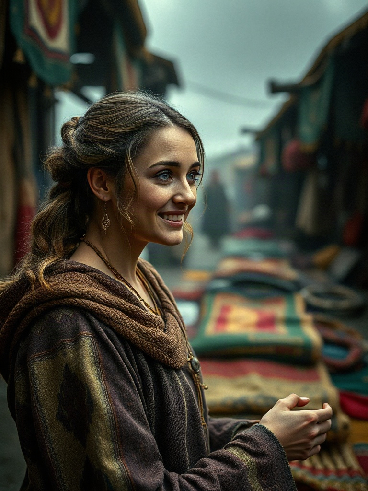

World & Character Bible · v1
Havnstad
A fjord village, its people, and the rules they act on.
Havnstad sits on the shore of a narrow fjord in remote Norway, backed by steep, pine-dark mountains
that rise straight from the water. Turf-roofed longhouses cluster along the waterline, smoke rising from
cooking fires. Jarl Sten's hall stands on raised ground above the village, larger and more
carved than the huts around it. A wide harbour holds longships and fishing boats at wooden docks; a
shipyard stands nearby with a half-built hull. Near the harbour: a modest market,
a blacksmith's forge, and a granary raised on stilts against damp. A few
farms with fenced fields sit on the flatter ground inland. The forest edge
presses close behind everything, dark and dense. Overcast Nordic light, muted green and grey, mist over the
water.

Generated — Flux schnell via fal.ai, from the reusable base prompt below
Reusable base prompt — prepend to every Havnstad scene
Cinematic painterly digital art, Viking-age Norway, a fjord village called Havnstad on
the shore of a narrow fjord backed by steep pine-forested mountains, turf-roofed longhouses, longships
moored at wooden docks, overcast muted-green Nordic light, mist over the water, painterly texture, highly
detailed, atmospheric — [scene-specific detail here]
Fixed locations
Jarl's Hall
Market
Harbour
Shipyard
Granary
Blacksmith's Forge
Farms (×3)
Fishing Shore
Forest Edge
Villager Huts
Resident NPCs — 11

Jarl StenRuler
Ambitious warrior-king. Harsh, demands loyalty over cleverness — and knows economics isn't his gift.
ambition:high
loyalty_demand:high
economic_skill:low
risk_tolerance:high
GoalsGrow Havnstad's strength · find someone he can actually trust with money matters
NeedsTax revenue · military readiness · loyal counsel
RelationshipsDistrusts outsiders by default · rewards proven loyalty visibly · watches Vidar warily
RulesOffers advisory roles only once trust + reputation + demonstrated competence clear a threshold · raises military spending as the Vidar threat rises · punishes disloyalty publicly
Portrait prompt
Portrait of a Viking jarl in his forties, powerfully built, weathered scarred face, stern expression, iron circlet, fur-trimmed cloak over mail, resting hand on a battle-axe, three-quarter view, direct gaze, softly blurred hall interior behind him.
AstridMoneylender
Sharp, composed, trusts numbers over people. Remembers every debt, forgets nothing.
trust_threshold:high
risk_tolerance:low
greed:moderate
GoalsGrow wealth safely · avoid bad debts
NeedsReliable borrowers · stable market prices
RelationshipsNeutral by default · rises with every loan repaid · drops sharply on a single default
RulesLends only above her trust threshold · interest scales with perceived risk · calls in loans when her own cash runs low
Portrait prompt
Portrait of a Viking woman in her late thirties, sharp intelligent eyes, composed expression, fine wool dress, silver arm-rings, a scale-weight pouch at her belt, three-quarter view, direct gaze, softly blurred market stalls behind her.

RagnvaldBlacksmith
Proud of his craft above all else. Slow to trust an outsider, loyal once he does.
pride:high
trust_threshold:moderate
work_ethic:high
GoalsStay the finest smith in the fjord · secure steady ore and coal
NeedsRaw materials · paying customers
RelationshipsRespects skill wherever he finds it · warms slowly to newcomers
RulesPrices rise when materials are scarce · trusted/loyal customers get priority · refuses rushed work that would mark his name
Portrait prompt
Portrait of a broad-shouldered Viking blacksmith, soot-streaked leather apron over bare forearms, burn-scarred hands, thick beard, forge coals glowing behind him, intent expression, three-quarter view.
HallaFisherman
Superstitious, weathered by salt and sun. Generous when the catch is good — hard when it isn't.
superstition:high
generosity:variable
GoalsProvide for her household · keep the sea's favour
NeedsGood weather and catch · fair prices at market
RelationshipsWarms quickly to anyone who shares in a hard season
RulesSells cheap after a good catch, prices high and hoards after a poor one · generosity toward the player tracks her last catch
Portrait prompt
Portrait of a weathered Viking fisherwoman, sun- and salt-worn skin, simple wool tunic, a fish-hook charm at her neck, wary watchful expression, fishing nets and the fjord blurred behind her.

BjornShipbuilder
Lean, energetic, wants Havnstad's trade reaching further than anyone's dared yet.
ambition:high
risk_tolerance:high
GoalsBuild bigger ships · expand Havnstad's trade routes
NeedsTimber · skilled labour · backers
RelationshipsActively courts the wealthy and influential for investment
RulesPitches ventures to high-wealth or high-trust NPCs, player included · build speed scales with labour and timber on hand
Portrait prompt
Portrait of a lean energetic Viking shipbuilder, sleeves rolled, wood-shaving-dusted apron, a measuring tool in hand, ambitious half-smile, a half-built longship visible behind him.

IngridFarmer
Mischievous and relentless — will do whatever it takes to rise above her station.
ambition:very high
honesty:low
risk_tolerance:high
GoalsClimb above her station, by any means available
NeedsLand · labour · Sten's favour
RelationshipsTreats rivals — possibly the player — as obstacles, not neighbours
RulesExaggerates or lies to the Jarl to raise herself or lower others · allies opportunistically with whoever looks to be winning · reputation collapses fast if a scheme is exposed
Portrait prompt
Portrait of a Viking farmwoman with sharp, calculating eyes, practical farm dress worn with one telling luxury — a fine borrowed brooch — a too-pleasant smile, farmland blurred behind her.

TorvaldJarl's Steward
Watchful, political, entirely devoted to protecting Sten's rule — and his own position.
political_savvy:high
loyalty_to_sten:very high
caution:high
GoalsProtect Sten's rule · keep the village running smoothly
NeedsAccurate information · Sten's continued trust
RelationshipsGatekeeps who gets an audience with the Jarl
RulesFilters access to Sten by reputation · reports notable player actions upward · wary of anyone who threatens his own standing
Portrait prompt
Portrait of a narrow-faced Viking steward, watchful expression, fine but understated clothing marking status without excess, a tally-stick ledger in hand, the Jarl's hall blurred behind him.
LeifThe Friend
The player's own confidant. Explains the village honestly — never decides for you.
loyalty_to_player:fixed
honesty:high
knowledge:broad
GoalsHelp the player understand Havnstad and succeed in it
Needs— narrative role, not a simulated economic agent
RelationshipsUnconditionally friendly · reads the village's mood on the player's behalf
RulesOpens every session with a plain-language recap of what happened since last login, then frames the current decision as a few clickable advice options — see Talk to Leif in Player Actions below for exactly what those buttons show
Portrait prompt
Portrait of a warm, open-faced young Viking man, plain practical dress, an easy approachable posture, a small carved token at his belt, harbour softly blurred behind him.

FreydisElder & Healer
Long memory, longer patience. Respected by everyone, from the Jarl down.
wisdom:high
patience:high
memory:long
GoalsPreserve the village's wellbeing and its old ways
NeedsRespect · herbs and supplies
RelationshipsRespected at every rank — her opinion colours how others treat you
RulesJudges by long-run pattern, never a single act · a word from her shifts others' opinions faster than most
Portrait prompt
Portrait of an elderly Viking woman, deeply lined face, long grey hair, dried herbs and small amulets at her belt, calm knowing expression, a hut interior blurred behind her.

ErikGuard Captain
Blunt, loyal to Sten without question. Trusts strength and reliability over cleverness.
loyalty_to_sten:very high
bluntness:high
values:strength
GoalsKeep Havnstad defended · earn Sten's trust
NeedsTrained warriors · weapons and supplies
RelationshipsRespects courage and reliability, dismisses cleverness without backbone
RulesRecruits and drills harder as the Vidar threat rises · reports readiness to Sten · distrusts anyone seen dealing with Vidar's people
Portrait prompt
Portrait of a scarred, powerfully built Viking guard captain, sword and round shield, a guard's cloak, alert stance, harbour palisade blurred behind him.

SolveigWeaver & Trader
Knows everyone's business. Havnstad's word-of-mouth, for better or worse.
sociability:very high
discretion:low
curiosity:high
GoalsStay informed · sell her goods · stay at the centre of things
NeedsMarket traffic · fresh gossip
RelationshipsKnows everyone's business — a little exaggerated in the telling
RulesSpreads a notable player action around the village faster than anyone — the reputation-propagation engine
Portrait prompt
Portrait of an animated Viking woman mid-conversation, colourful woven textiles laid out around her, market stalls blurred behind her, bright curious expression.
External threat
Jarl Vidar
Rival Ruler
Rules a neighbouring settlement, not Havnstad — modelled as an offstage power whose own ambition, strength,
and standing army drive an invasion_likelihood value against Havnstad, rather than
a resident NPC with a portrait walking the village. Sten opposes him and maintains his own body of warriors,
led by Erik, specifically against this threat — both sides field a real, simulated force, not just intent.
Traitsambition: very high · aggression: high · opportunism: high
ArmyMaintains his own standing warband — vidar_army_strength, grown independently of Havnstad, sets the ceiling on how credible his invasion threat actually is
DrivesInvasion likelihood rises as his own army strengthens relative to Erik's, and as Havnstad's visible wealth rises while its defence falls
Sten's responseIncreases Erik's warrior recruitment and readiness as the gap with Vidar's army closes
Economy simulation — grain loop
The first working loop: farm → grain → labour → production → market → prices → buying/selling
→ wealth → reputation. Every buyer — named NPC or the abstracted village population — chooses which
seller to buy from by maximising utility, not just chasing the lowest
price: a seller who raises price without raising quality gets shopped around, bought from only once every
better-value rival has sold out.
silverper agentLiquid wealth. Every trade moves it buyer → seller.
grainper agentHeld inventory — what you actually have on hand, not what you can afford.
landfarms onlyCaps how much labour a farm can usefully absorb.
labourfarms onlyWorkers actively farming — self, family, hired hands.
farming_skillfarms onlySlow-moving. Drives quality, not raw yield.
priceper sellerSelf-set every week — manually by the player, by rule for NPCs.
qualityper sellerDerived from farming_skill. What lets a pricier seller still win.
price_sensitivityper buyerHow heavily price outweighs quality in that buyer's choice.
1 · Production
Weekly, per farm. Labour past what the land can absorb stops adding yield.
grain_produced = base_yield_per_land
× land
× min(1, labour / labour_needed(land))
× season_yield_multiplier
season_yield_multiplier: spring 0.6 · summer 1.0 · autumn 1.3 · winter 0
2 · Quality
Slow-moving relative to price — this is what makes it a real trade-off, not just a second price.
quality = base_quality + skill_bonus(farming_skill) + small_seasonal_variance
3 · Consumption & who becomes a buyer
Every agent, including the abstracted village population — same formula, no special-casing.
consumption_needed = population × per_capita_grain_per_week × (winter ? winter_multiplier : 1)
shortfall = max(0, consumption_needed − own_grain_stock)
shortfall > 0 → this agent enters the market as a BUYER this week, needing `shortfall` units
4 · Seller pricing
The player sets price by their own decision each week. NPC sellers price adaptively — the classic feedback rule: sold out means you could have charged more, leftover stock means you charged too much.
if sold_out_last_week: price *= (1 + PRICE_UP_STEP)
elif leftover_stock_last_week: price *= (1 − PRICE_DOWN_STEP)
else: price unchanged
5 · Utility-maximising market clearing
The core mechanic. Every buyer ranks every seller of the same good and buys down the list — not just the cheapest, and not just the closest.
utility[seller] = quality[seller] − price_sensitivity[buyer] × price[seller]
for each buyer, each week:
rank sellers by utility, highest first
buy from the top-ranked seller up to their remaining stock
move to the next seller if still short
repeat until satisfied or every seller is exhausted
A seller who raises price without raising quality drops in the ranking — bought from last, only once every
better-value rival has already sold out. A seller with genuinely higher quality can still rank first despite
a higher price: quality just has to outweigh price_sensitivity × the price gap,
which is exactly "unless quality suffices," made concrete.
6 · Settlement
No single clearing price — sellers are differentiated, so each trade settles at that seller's own price.
on each matched trade: buyer.silver −= qty × seller.price
buyer.grain += qty
seller.silver += qty × seller.price
seller.grain −= qty
Weekly tick order
Season / week advance — check for a season boundary.
Production — every farm produces grain (rule 1); quality updates (rule 2).
Pricing — every seller sets this week's asking price (rule 4; player acts manually).
Consumption & demand — every agent computes its shortfall; anyone short becomes a buyer (rule 3).
Market clearing — every buyer ranks sellers by utility and buys down the list (rules 5-6).
Other player actions resolve — loans, hiring, political moves not already covered above.
Social & political phase — Ingrid's scheming, Solveig's gossip, Torvald's reports, Sten's threshold checks, Erik's recruitment vs. Vidar.
Reputation & relationships finalise for the week.
Learning-engine hook — this week's reasoning + action logged against whichever knowledge nodes the week's scenario was tagged with.
Leif's recap is generated for the player's next login.
Week counter increments.
Worked example — week 14, autumn
Player farm: land 4, labour 2 → efficiency 0.5, quality 6, prices manually at 3.0/unit (holding last week's rate).
grain_produced = 5 × 4 × 0.5 × 1.3 =
13
Ingrid's farm: land 5, labour 5 → efficiency 1.0, quality 5, sold out last week → price rises to 3.3/unit.
grain_produced = 5 × 5 × 1.0 × 1.3 =
32.5
Village demand: shortfall
40, price_sensitivity 1.0.
| utility[player] | 6 − 1.0×3.0 = 3.0 ← ranks first (cheaper AND better this week) |
| utility[Ingrid] | 5 − 1.0×3.3 = 1.7 |
Village buys the player's full 13 first — sold out, 39 silver earned. Still needs 27 → buys 27 from Ingrid
(89.1 silver earned), who's left with 5.5 unsold. Because Ingrid didn't sell out, rule 4 drops her price next
week — the market drifting back toward where it clears, one adaptive step at a time.
Player actions
Every action below is what the natural-language interpreter (step 6) has to resolve free text down to —
each one names exactly what state it reads, what it writes, and what makes it invalid. The interpreter's whole
job is turning "I'll sell 10 grain, winter's coming" into one of these; it never touches state itself.
SELL_GRAIN
resource, quantity, price
Readsown grain stock
Writesseller.price, stock offered this week (rule 4)
Invalid ifquantity > own grain stock
BUY_GRAIN
resource, quantity, max_price?
Readsown silver
Writesa buy order for this week's market clearing (rule 5) — fulfilled up to affordability and seller stock, not guaranteed in full
Invalid ifquantity × cheapest available price > own silver
SET_LABOUR
quantity (signed — hire or release)
Readsown silver, own land
Writesown labour (feeds production, rule 1)
Invalid ifhiring past own silver (wages), or releasing below 0
BORROW
lender, amount
Readslender's trust_threshold, lender's own silver reserve
Writesplayer.silver +, player.debt[lender] + (Astrid's own lending rule sets the interest)
Invalid iftrust_with[lender] below their threshold, or lender can't spare the amount
REPAY
lender, amount
Readsplayer.silver, player.debt[lender]
Writesplayer.silver −, debt −, trust_with[lender] + (on-time repayment is the main lever raising Astrid's trust)
Invalid ifamount > own silver or > outstanding debt
TALK_TO_LEIF
— no parameters; this is a conversation, not a trade
Leif opens with a plain-language recap of every notable event since the player's last login — prices that moved, deals made, what Solveig's been saying, whether the Vidar threat has shifted.
He frames the live decision the player's actually facing right now (the Jarl's short on grain, Astrid's called in a debt, whatever the current scenario is) as a short question, not an instruction.
Under it: a few clickable advice options, one per knowledge node the current scenario is tagged to. Each one is the real LastMind lesson's explanation text for that node — unchanged, no rewriting — with the practice question stripped off. Clicking one just shows Leif "saying" that explanation in his own voice; nothing is graded here.
The player reads as many or as few as they like, then states their own action in their own words — same as any other action, resolved by the interpreter above.
Learning-engine note: clicking an advice option logs as exposure to that node, not mastery — per the standing rule, seeing an explanation is never treated as evidence of understanding. Mastery is still assessed from what the player actually argues and does afterward.
Portraits: generate one reference image per character using the prompt on their card, then feed that
same image back in as a reference on every later generation of them (e.g. Midjourney's --cref,
or a conversational tool where you upload the portrait and ask for "the same person, now at the harbour").
That one reference is what keeps each character recognisable scene to scene — no retraining, no extra tooling.